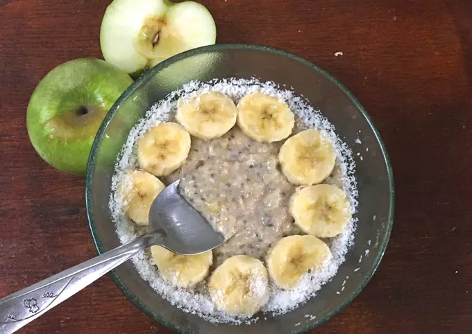

- Ingredientes:
- 1 ración
- 1/2 taza leche o yogurt
- 1/2 taza agua
- 1 cda azúcar o edulcorante
- 3 cdas avena
- Opcional
- 1/2 manzana mediana
- 1/2 banana mediana
- 1 cda semillas de chia
- 1 cda coco rallado
- 1/2 cda miel
- 1/2 cdita canela en polvo o cacao a gusto
- En una olla, poner el agua con la leche y el azúcar o edulcorante. Cuando entibie agregar la avena, y revolver constantemente.
- Cuando hierva, pueden hacer dos cosas: apagan la hornalla y les queda una avena simple o sino ponen la hornalla a fuego mínimo para agregarle más ingredientes y que quede más sabroso: rallan la media manzana y aplastan media banana y la agregan a la olla, junto con las semillas de chia, el coco rallado, la canela o el cacao, la miel y el azúcar.
- Revuelven todo durante cinco minutos más, lo pasan a un bowl y decoran como quieran, dejando que se enfríe o entibie para comerla. Yo decoré con más coco y con la mitad de la banana que me sobró.